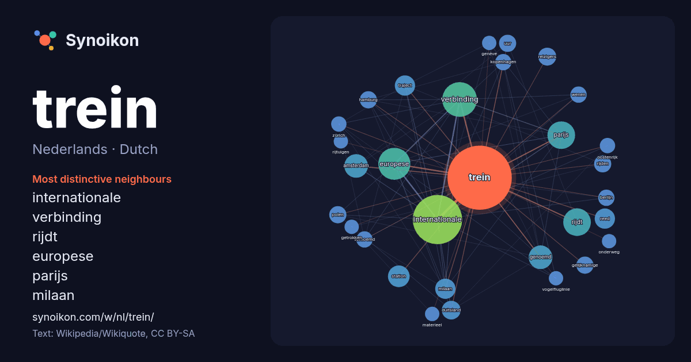

Nederlands · Dutch · word of the day list
trein
“train” · The words found around it in 565 instances from Dutch Wikipedia, Wikiquote.

Most distinctive neighbours
- internationale 58×
- verbinding 36×
- rijdt 25×
- europese 23×
- parijs 20×
- milaan 14×
- traject 14×
- reed 12×
- amsterdam 12×
- reizigers 11×
- genoemd 10×
- hamburg 10×
- rijden 9.6×
- station 9.5×
- kopenhagen 9.5×
- gelijknamige 9.5×
- polen 9.4×
- wenen 9.0×
- duitsland 8.7×
- zürich 8.6×
× = how many times more often than in general Dutch Wikipedia text.
Most frequent neighbours
- internationale 83
- verbinding 41
- europese 35
- parijs 26
- rijdt 26
- amsterdam 19
- genoemd 19
- station 16
- milaan 14
- reed 14
- traject 14
- duitsland 12
- reizigers 11
- gelijknamige 10
- hamburg 10
- polen 10
- rijden 10
- uur 10
- belgië 9
- berlijn 9
In context
- Zie Trein (doorverwijspagina) voor andere betekenissen van Trein. Een trein is in de dagelijkse betekenis een voertuig bestaande uit een aantal aan elkaar Wikipedia snippets · Trein
- Reizigers dat voornamelijk gebruikt wordt in intercitytreindiensten. De trein heeft de bijnaam Koploper vanwege de doorloopkop onder de verhoogde machinistencabine Wikipedia snippets · Intercitymaterieel
- Dit artikel gaat over de trein. Zie Orient Express (automerk) voor het automerk. De Oriënt-Express was een beroemde luxetrein van de Belgische Compagnie Wikipedia snippets · Oriënt-Express
- storingsgevoeligheid. Bij een trein kan een bak een rijtuig zijn, of een motorrijtuig, of een deel van een treinstel. Om de samenstelling van een trein of treinstel te Wikipedia snippets · Bak (trein)
- Een elektrische trein is een trein die wordt aangedreven door een of meer elektromotoren en die de benodigde elektrische energie niet zelf opwekt, zoals Wikipedia snippets · Elektrische trein
- die de Russische steden Moskou en Vladivostok met elkaar verbindt. De trein volgt voor het grootste deel het hoofdtraject van de Trans-Siberische spoorlijn Wikipedia snippets · Rossiya (trein)
- eerst als luxetrein gereden en is pas in 1965 in het TEE-net opgenomen. De trein werd in 1928 als FFD Rheingold door de Deutsche Reichsbahn in de dienstregeling Wikipedia snippets · Rheingold (trein)
- De Roland was tot 1980 een Europese internationale trein voor de verbinding Bremen - Milaan. De middeleeuwse Roland is het symbool van de Hanzestad Bremen Wikipedia snippets · Roland (trein)
More Dutch words
Precomputed on 2026-10-09 with default settings (±5 words, medium corpus). The interactive map can refresh it with live data.